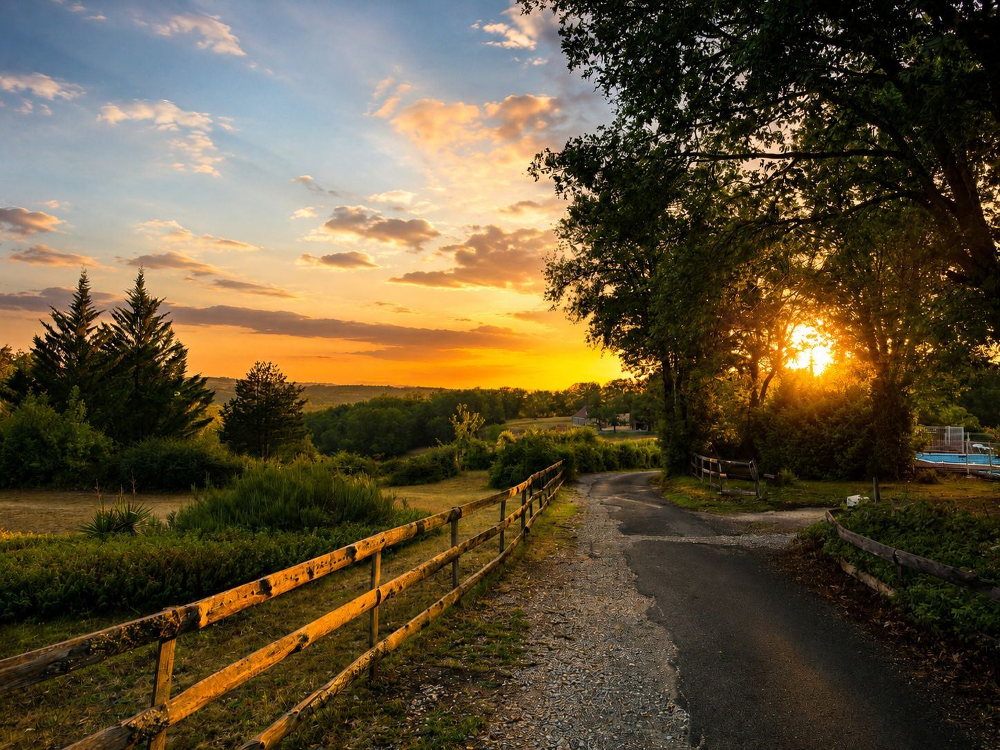

Les gîtes
Chaque gîte ouvre sur le jardin, avec sa terrasse et son jardinet.
- Cuisine équipée
- Salle d'eau
- Terrasse

On y vient pour manger, séjourner, boire un verre, et pour ralentir un peu. À pied, en van, à moto ou en famille, l'Escale vous garde une place.
Un gîte, une tente sous les arbres ou un emplacement pour votre van : trois façons de rester à l'Escale.
Chaque gîte ouvre sur le jardin, avec sa terrasse et son jardinet.

Un sous-bois de deux hectares. Vous plantez votre tente où vous voulez ; sanitaires, douches chaudes et eau potable sont sur place.

Une grande prairie ouverte avec vue sur la vallée, à deux pas du bar, du restaurant et de la piscine.
Quatre hectares de bois, de prés et de chemins, et une petite compagnie animale qu'on croise au détour d'un sentier.


Ouverts à tous, que vous dormiez sur place ou non.

Ven → dim · tous les soirs en juillet-août · 18h–22h30
Pâte maison, 17 pizzas de 33 cm, sur place en terrasse ou à emporter.
Voir la carte des pizzas →
Juillet-août · tous les soirs · 18h–22h30
Salades, viandes, desserts maison et glaces artisanales. Petits déjeuners pour les hébergés.
Voir la carte du restaurant →« On vient pour manger, dormir, boire un verre — on reste pour la sérénité du lieu. »
Larcher, c'est d'abord un nom : celui du lieu-dit, du chemin, de la pierre. Puis un domaine qu'on a remis debout en gardant ce qui était déjà là : les arbres, la lumière du soir, le calme.
Aujourd'hui on y dort, on y mange, on y boit un verre. Ni resort, ni parc de loisirs : une escale familiale, ouverte à tout le monde.
L'équipe de L'Escale de Larcher


« Un vrai coup de cœur ! Je ne devais rester qu’une nuit (emplacement camping)… j’en ai passé deux tant je me suis sentie bien. L’accueil est d’une rare chaleur : même en arrivant seule, je me suis immédiatement sentie à ma place, accueillie avec bienveillance, comme chez des amis. Le cadre est paisible, ressourçant, parfait pour déconnecter. Les équipements sont impeccables, rien ne manque. Et alors les pizzas… un vrai régal ! Une parenthèse pleine de douceur et de simplicité que je recommande les yeux fermés. Merci pour ces beaux moments ! »
« Petit séjour rapide en famille. Nous avons trouvé un sublime petit coin calme et très accueillant. Ideal pour des vacances paisibles avec des enfants un véritable parc de jeu pour les petits, avec par dessus tout un super coin restaurant proposant des produits frais et des très bonnes pizzas a manger sur place ou a emporter. Une belle petite pépite. Dommage que nous n'avons pas plus de temps devant nous... nous serions bien resté. »
« Un lieu magnifique. L’air y est vraiment particulier : feuillus et conifères mêlent leurs senteurs et offrent un vrai parfum de forêt. Il y a beaucoup d’espace, c’est idéal pour se promener et se détendre. Le restaurant propose une cuisine savoureuse avec des produits frais — même les feuilles de salade ont un goût unique. Les hôtes sont chaleureux, accueillants et attentionnés. Et les environs valent le détour : il y a plein de choses à voir. Je recommande vivement »
« Une chose à dire : endroit superbe, sauvage, animaux en liberté, idéal pour les enfants avec beaucoup d'espace des jeux à gogos, piscine au top pour les moments de chaleur, énormément d'activités et de visites aux alentours. Un camping familial accueillant, comme on en fait plus de nos jours. Une vraie pépite. Nous devions rester 2 nuits, on a fini par une semaine complète. Adresse à partager (mention spéciale pour les pizzas excellente). Au plaisir de revenir l'année prochaine. »
La Dordogne et ses châteaux sont tout proches.
Plage de galets, baignade, départ canoë au village voisin.
Marché du samedi, ruelles médiévales, foie gras et noix.
Deux forteresses qui se font face au-dessus de la vallée.
Descente en barque sur une rivière souterraine.
Boucle de 9 km, sous-bois et points de vue sur la vallée.
Piscine, bar, pizzas, animaux, hamacs, jeux d'enfants.